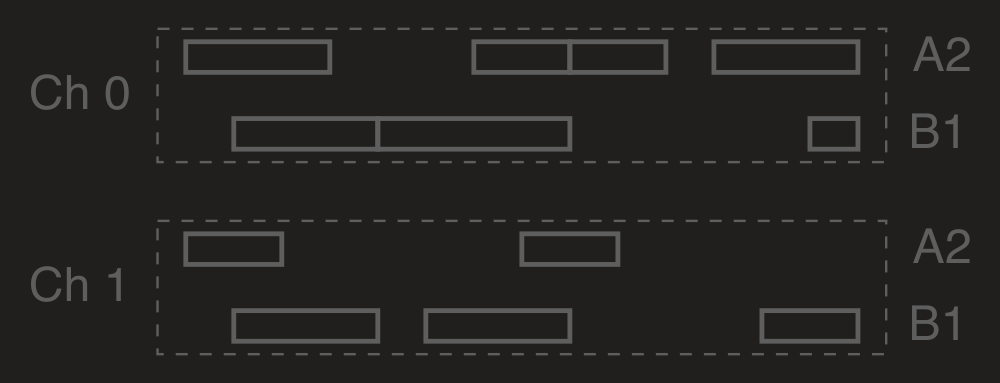
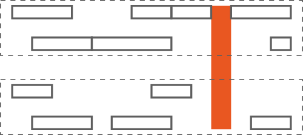
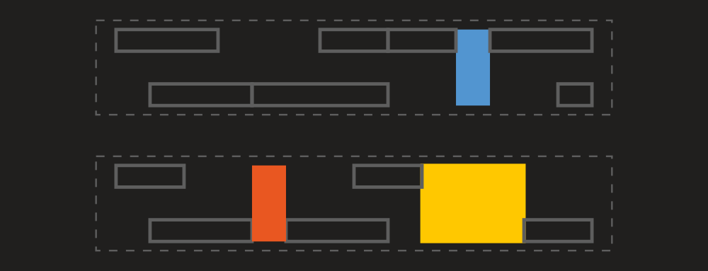
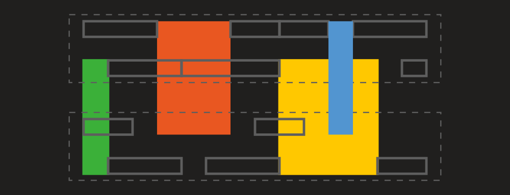
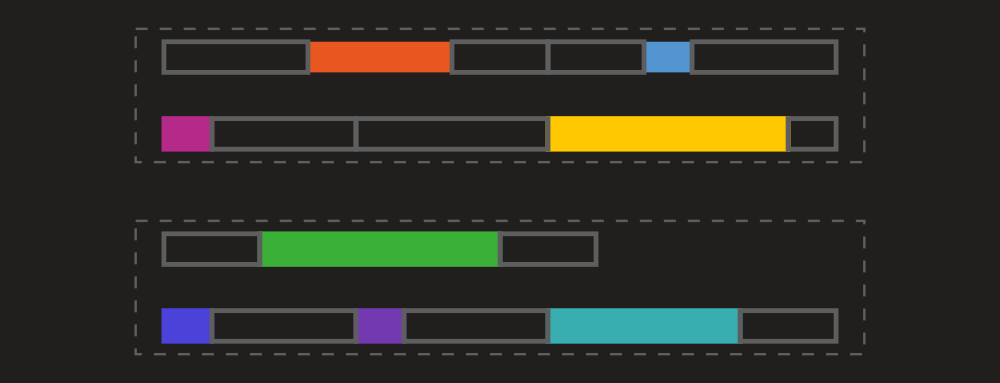

Getting objects
This article describes ways to get different objects (like timed events or notes) from MIDI files, track chunks and collections of another objects.
GetTimedEvents
TimedEvent is the basic MIDI object we will describe here. It's just a MIDI event along with its absolute time within a MIDI file or track chunk. To get all timed events in a MIDI file, you can just call GetTimedEvents method:
using System;
using Melanchall.DryWetMidi.Core;
using Melanchall.DryWetMidi.Interaction;
namespace DwmExamples
{
class Program
{
static void Main(string[] args)
{
var midiFile = MidiFile.Read("My Great Song.mid");
var timedEvents = midiFile.GetTimedEvents();
Console.WriteLine($"{timedEvents.Count} timed events found.");
}
}
}
Please examine TimedEventsManagingUtilities class to see other GetTimedEvents overloads.
GetNotes
There is the NotesManagingUtilities class which provides useful methods GetNotes to get notes from a MIDI file or track chunk. For example, you can get notes a MIDI file contains with this code:
using System;
using Melanchall.DryWetMidi.Common;
using Melanchall.DryWetMidi.Core;
using Melanchall.DryWetMidi.Interaction;
namespace DwmExamples
{
class Program
{
static void Main(string[] args)
{
var midiFile = new MidiFile(
new TrackChunk(
new NoteOnEvent(),
new NoteOffEvent(),
new NoteOnEvent((SevenBitNumber)70, (SevenBitNumber)50)
{
Channel = (FourBitNumber)5,
DeltaTime = 10
},
new NoteOffEvent((SevenBitNumber)70, (SevenBitNumber)30)
{
Channel = (FourBitNumber)5,
DeltaTime = 70
}));
Console.WriteLine("Notes:");
foreach (var note in midiFile.GetNotes())
{
Console.Write($@"
note {note} (note number = {note.NoteNumber})
time = {note.Time}
length = {note.Length}
velocity = {note.Velocity}
off velocity = {note.OffVelocity}");
}
Console.ReadKey();
}
}
}
Running the program, we'll see following output:
Notes:
note C-1 (note number = 0)
time = 0
length = 0
velocity = 0
off velocity = 0
note A#4 (note number = 70)
time = 10
length = 70
velocity = 50
off velocity = 30
Please examine NotesManagingUtilities class to see other GetNotes overloads.
Settings
All GetNotes overloads can accept NoteDetectionSettings as last parameter. Via this parameter you can adjust the process of notes building. Let's see each setting in details.
NoteStartDetectionPolicy
The NoteStartDetectionPolicy property defines how start event of a note should be found in case of overlapping notes with the same note number and channel. The default value is NoteStartDetectionPolicy.FirstNoteOn.
To understand how this policy works let's take a look at the following events sequence:
where empty circle and filled one mean Note On and Note Off events correspondingly; cross means any other event. So we have two overlapped notes here (we assume all note events have the same note number and channel).
If we set NoteStartDetectionPolicy to NoteStartDetectionPolicy.FirstNoteOn, notes will be constructed in following way:
So every Note Off event will be combined with first free Note On event into a note (events are processed one by one consecutively). But if set NoteStartDetectionPolicy to NoteStartDetectionPolicy.LastNoteOn, we'll get another picture:
So Note Off events will be combined with last free Note On event into a note.
GetChords
There is the ChordsManagingUtilities class which provides useful methods GetChords to get notes from a MIDI file or track chunk. For example, you can get chords a MIDI file contains with this code:
using System;
using Melanchall.DryWetMidi.Common;
using Melanchall.DryWetMidi.Core;
using Melanchall.DryWetMidi.Interaction;
namespace DwmExamples
{
class Program
{
static void Main(string[] args)
{
var midiFile = new MidiFile(
new TrackChunk(
new NoteOnEvent(),
new NoteOffEvent(),
new NoteOnEvent
{
Channel = (FourBitNumber)5,
DeltaTime = 10
},
new NoteOffEvent
{
Channel = (FourBitNumber)5
},
new NoteOnEvent((SevenBitNumber)70, (SevenBitNumber)50)
{
Channel = (FourBitNumber)5
},
new NoteOffEvent((SevenBitNumber)70, (SevenBitNumber)30)
{
Channel = (FourBitNumber)5,
DeltaTime = 70
}));
Console.WriteLine("Chords:");
foreach (var chord in midiFile.GetChords())
{
Console.Write($@"
chord
channel = {chord.Channel}
time = {chord.Time}
length = {chord.Length}
notes:");
foreach (var note in chord.Notes)
{
Console.Write($@"
note {note} (note number = {note.NoteNumber})
channel = {note.Channel}
time = {note.Time}
length = {note.Length}
velocity = {note.Velocity}
off velocity = {note.OffVelocity}");
}
}
Console.ReadKey();
}
}
}
Running the program, we'll see following output:
Chords:
chord
channel = 0
time = 0
length = 0
notes:
note C-1 (note number = 0)
channel = 0
time = 0
length = 0
velocity = 0
off velocity = 0
chord
channel = 5
time = 10
length = 70
notes:
note C-1 (note number = 0)
channel = 5
time = 10
length = 0
velocity = 0
off velocity = 0
note A#4 (note number = 70)
channel = 5
time = 10
length = 70
velocity = 50
off velocity = 30
Please examine ChordsManagingUtilities class to see other GetChords overloads.
Settings
All GetChords overloads can accept ChordDetectionSettings as last parameter. Via this parameter you can adjust the process of chords building. Let's see each setting in details.
NoteDetectionSettings
Chords are built on top of notes. So to build chords we need to build notes. The process of notes building is adjustable via NoteDetectionSettings property. Properties of the NoteDetectionSettings are described in detail above.
NotesTolerance
The NotesTolerance property defines the maximum distance of notes from the start of the first note of a chord. Notes within this tolerance will be included in a chord. The default value is 0.
To understand how this property works let's take a look at the following notes (cross means any non-note event):
If we set notes tolerance to 0 (which is default value), we'll get three different chords (each of one note):
Different colors denotes different chords. If we set notes tolerance to 1, we'll get two chords:
With tolerance of 2 we'll finally get a single chord:
NotesMinCount
The NotesMinCount property defines the minimum count of notes a chord can contain. So if count of simultaneously sounding notes is less than this value, they won't make up a chord. The default value is 1 which means a single note can be turned to a chord.
To understand how this property works let's take a look at the following notes (cross means any non-note event):
So we have three notes. For simplicity we'll assume that NotesTolerance is 0 (default value). If we set notes min count to 1 (which is default value), we'll get two different chords:
If we set notes min count to 2, we'll get only one chord:
Last note will not be turned into a chord because count of notes for a chord will be 1 which is less than the specified minimum count. With minimum count of notes of 3 we'll get no chords:
First possible chord will contain two notes and second chord will contain one note. In both cases count of notes is less than the specified minimum count.
GetObjects
All methods we saw before return collection of objects of the same type. So you can get only either notes or chords or timed events. To highlight the problem, let's take a look at the following events sequence:

where empty circle and filled one mean Note On and Note Off events correspondingly; cross means any other event. We assume all note events have the same note number and channel.
With GetTimedEvents we'll just get all these events as is. GetNotes will give us only notes:
GetChords will return only chords (single one in this example):
So if we run following simple program:
using System;
using System.Collections.Generic;
using Melanchall.DryWetMidi.Core;
using Melanchall.DryWetMidi.Interaction;
namespace DwmExamples
{
class Program
{
static void Main(string[] args)
{
var midiFile = new MidiFile(
new TrackChunk(
new TextEvent("1"),
new NoteOnEvent { DeltaTime = 1 },
new TextEvent("2") { DeltaTime = 1 },
new NoteOffEvent { DeltaTime = 1 },
new TextEvent("3") { DeltaTime = 1 },
new NoteOnEvent { DeltaTime = 1 },
new TextEvent("4") { DeltaTime = 1 },
new NoteOffEvent { DeltaTime = 1 },
new TextEvent("5") { DeltaTime = 1 },
new NoteOnEvent { DeltaTime = 1 },
new TextEvent("6")),
new TrackChunk(
new TextEvent("A"),
new TextEvent("B") { DeltaTime = 1 },
new TextEvent("C") { DeltaTime = 1 },
new TextEvent("D") { DeltaTime = 1 },
new TextEvent("E") { DeltaTime = 1 },
new NoteOnEvent { DeltaTime = 1 },
new TextEvent("F") { DeltaTime = 1 },
new NoteOffEvent { DeltaTime = 1 },
new TextEvent("G") { DeltaTime = 1 },
new TextEvent("H") { DeltaTime = 1 },
new TextEvent("I")));
Console.WriteLine("Getting timed events...");
WriteTimedObjects(midiFile.GetTimedEvents());
Console.WriteLine("Getting notes...");
WriteTimedObjects(midiFile.GetNotes());
Console.WriteLine("Getting chords...");
WriteTimedObjects(midiFile.GetChords(new ChordDetectionSettings
{
NotesMinCount = 2
}));
Console.ReadKey();
}
private static void WriteTimedObjects<TObject>(ICollection<TObject> timedObjects)
where TObject : ITimedObject
{
foreach (var timedObject in timedObjects)
{
Console.WriteLine($"[{timedObject.GetType().Name}] {timedObject} (time = {timedObject.Time})");
}
}
}
}
we'll get this output:
Getting timed events...
[TimedEvent] Event at 0: Text (1) (time = 0)
[TimedEvent] Event at 0: Text (A) (time = 0)
[TimedEvent] Event at 1: Note On [0] (0, 0) (time = 1)
[TimedEvent] Event at 1: Text (B) (time = 1)
[TimedEvent] Event at 2: Text (2) (time = 2)
[TimedEvent] Event at 2: Text (C) (time = 2)
[TimedEvent] Event at 3: Note Off [0] (0, 0) (time = 3)
[TimedEvent] Event at 3: Text (D) (time = 3)
[TimedEvent] Event at 4: Text (3) (time = 4)
[TimedEvent] Event at 4: Text (E) (time = 4)
[TimedEvent] Event at 5: Note On [0] (0, 0) (time = 5)
[TimedEvent] Event at 5: Note On [0] (0, 0) (time = 5)
[TimedEvent] Event at 6: Text (4) (time = 6)
[TimedEvent] Event at 6: Text (F) (time = 6)
[TimedEvent] Event at 7: Note Off [0] (0, 0) (time = 7)
[TimedEvent] Event at 7: Note Off [0] (0, 0) (time = 7)
[TimedEvent] Event at 8: Text (5) (time = 8)
[TimedEvent] Event at 8: Text (G) (time = 8)
[TimedEvent] Event at 9: Note On [0] (0, 0) (time = 9)
[TimedEvent] Event at 9: Text (6) (time = 9)
[TimedEvent] Event at 9: Text (H) (time = 9)
[TimedEvent] Event at 9: Text (I) (time = 9)
Getting notes...
[Note] C-1 (time = 1)
[Note] C-1 (time = 5)
[Note] C-1 (time = 5)
Getting chords...
[Chord] C-1 C-1 (time = 5)
As you can see there is "free" Note On event without corresponding Note Off one so we can't build a note for it. What if we want to get all possible notes and all remaining timed events? DryWetMIDI provides GetObjectsUtilities class which contains GetObjects methods (for the same MIDI structures as previous methods). We can change printing part of the program above to:
Console.WriteLine("Getting notes and timed events...");
WriteTimedObjects(midiFile.GetObjects(ObjectType.Note | ObjectType.TimedEvent));
which will give us following output:
Getting notes and timed events...
[TimedEvent] Event at 0: Text (1) (time = 0)
[TimedEvent] Event at 0: Text (A) (time = 0)
[Note] C-1 (time = 1)
[TimedEvent] Event at 1: Text (B) (time = 1)
[TimedEvent] Event at 2: Text (2) (time = 2)
[TimedEvent] Event at 2: Text (C) (time = 2)
[TimedEvent] Event at 3: Text (D) (time = 3)
[TimedEvent] Event at 4: Text (3) (time = 4)
[TimedEvent] Event at 4: Text (E) (time = 4)
[Note] C-1 (time = 5)
[Note] C-1 (time = 5)
[TimedEvent] Event at 6: Text (4) (time = 6)
[TimedEvent] Event at 6: Text (F) (time = 6)
[TimedEvent] Event at 8: Text (5) (time = 8)
[TimedEvent] Event at 8: Text (G) (time = 8)
[TimedEvent] Event at 9: Note On [0] (0, 0) (time = 9)
[TimedEvent] Event at 9: Text (6) (time = 9)
[TimedEvent] Event at 9: Text (H) (time = 9)
[TimedEvent] Event at 9: Text (I) (time = 9)
So all note events that build up a note were turned into instances of Note, and all remaining events (including "free" Note On one) were returned as instances of TimedEvent.
We can go further and collect all possible chords, notes and timed events:
Console.WriteLine("Getting chords, notes and timed events...");
WriteTimedObjects(midiFile.GetObjects(
ObjectType.Chord | ObjectType.Note | ObjectType.TimedEvent,
new ObjectDetectionSettings
{
ChordDetectionSettings = new ChordDetectionSettings
{
NotesMinCount = 2
}
}));
which will give us following output:
Getting chords, notes and timed events...
[TimedEvent] Event at 0: Text (1) (time = 0)
[TimedEvent] Event at 0: Text (A) (time = 0)
[Note] C-1 (time = 1)
[TimedEvent] Event at 1: Text (B) (time = 1)
[TimedEvent] Event at 2: Text (2) (time = 2)
[TimedEvent] Event at 2: Text (C) (time = 2)
[TimedEvent] Event at 3: Text (D) (time = 3)
[TimedEvent] Event at 4: Text (3) (time = 4)
[TimedEvent] Event at 4: Text (E) (time = 4)
[Chord] C-1 C-1 (time = 5)
[TimedEvent] Event at 6: Text (4) (time = 6)
[TimedEvent] Event at 6: Text (F) (time = 6)
[TimedEvent] Event at 8: Text (5) (time = 8)
[TimedEvent] Event at 8: Text (G) (time = 8)
[TimedEvent] Event at 9: Note On [0] (0, 0) (time = 9)
[TimedEvent] Event at 9: Text (6) (time = 9)
[TimedEvent] Event at 9: Text (H) (time = 9)
[TimedEvent] Event at 9: Text (I) (time = 9)
Or in visual representation:
Currently GetObjects can build objects of the following types:
Rests
Let's see on rests building in details, since GetObjects is the only way to get them. First of all, all GetObjects overloads accept settings as an instance of the ObjectDetectionSettings class. Most of its properties are already discussed in previous sections on notes building settings and chords building ones. But there is the RestDetectionSettings property which controls how rests should be detected.
Supposing we have following notes (with two different note numbers on two different channels):

RestDetectionSettings provides RestSeparationPolicy property which determines a rule for creating rests. Now we'll see how each possible value of the policy affects the result of rests building.
Using NoSeparation (which is the default value) we'll get only one rest:

"No separation" means "there is no difference between channels and note numbers" so rests will be constructed only at spaces where there are no notes at all (with any channels and any note numbers).
With SeparateByChannel we'll get three rests:

So rests are separated by channels only. Note number of a note doesn't matter, all numbers are treated as the same one. So rests will be constructed for each channel at spaces where there are no notes (with any note numbers).
With SeparateByNoteNumber we'll get following rests:

As you can see rests now are separated by note number (channel doesn't matter). So rests will be constructed for each note number at spaces where there are no notes (with any channel).
With SeparateByChannelAndNoteNumber we'll get rests at every "free" space:

Let's see all these processes in action with a small program:
using System;
using System.Collections.Generic;
using System.Linq;
using Melanchall.DryWetMidi.Common;
using Melanchall.DryWetMidi.Interaction;
using NoteName = Melanchall.DryWetMidi.MusicTheory.NoteName;
namespace DwmExamples
{
class Program
{
static void Main(string[] args)
{
var ch0 = (FourBitNumber)0;
var a2Ch0Notes = new[]
{
new Note(NoteName.A, 2, 3, 0) { Channel = ch0 },
new Note(NoteName.A, 2, 2, 6) { Channel = ch0 },
new Note(NoteName.A, 2, 2, 8) { Channel = ch0 },
new Note(NoteName.A, 2, 3, 11) { Channel = ch0 }
};
var b1Ch0Notes = new[]
{
new Note(NoteName.B, 1, 3, 1) { Channel = ch0 },
new Note(NoteName.B, 1, 4, 4) { Channel = ch0 },
new Note(NoteName.B, 1, 1, 13) { Channel = ch0 }
};
var ch1 = (FourBitNumber)1;
var a2Ch1Notes = new[]
{
new Note(NoteName.A, 2, 2, 0) { Channel = ch1 },
new Note(NoteName.A, 2, 2, 7) { Channel = ch1 }
};
var b1Ch1Notes = new[]
{
new Note(NoteName.B, 1, 3, 1) { Channel = ch1 },
new Note(NoteName.B, 1, 3, 5) { Channel = ch1 },
new Note(NoteName.B, 1, 2, 12) { Channel = ch1 }
};
var notes = a2Ch0Notes
.Concat(b1Ch0Notes)
.Concat(a2Ch1Notes)
.Concat(b1Ch1Notes)
.ToArray();
WriteRests(notes, RestSeparationPolicy.NoSeparation);
WriteRests(notes, RestSeparationPolicy.SeparateByChannel);
WriteRests(notes, RestSeparationPolicy.SeparateByNoteNumber);
WriteRests(notes, RestSeparationPolicy.SeparateByChannelAndNoteNumber);
Console.ReadKey();
}
private static void WriteRests(
ICollection<Note> notes,
RestSeparationPolicy restSeparationPolicy)
{
var rests = notes
.GetObjects(
ObjectType.Rest,
new ObjectDetectionSettings
{
RestDetectionSettings = new RestDetectionSettings
{
RestSeparationPolicy = restSeparationPolicy
}
})
.Cast<Rest>()
.ToArray();
Console.WriteLine($"Rests by {restSeparationPolicy} policy:");
foreach (var rest in rests)
{
Console.WriteLine($"[{rest.Length}] at [{rest.Time}] (note number = {rest.NoteNumber}, channel = {rest.Channel})");
}
}
}
}
Output is:
Rests by NoSeparation policy:
[1] at [10] (note number = , channel = )
Rests by SeparateByChannel policy:
[1] at [4] (note number = , channel = 1)
[3] at [9] (note number = , channel = 1)
[1] at [10] (note number = , channel = 0)
Rests by SeparateByNoteNumber policy:
[1] at [0] (note number = 35, channel = )
[3] at [3] (note number = 45, channel = )
[4] at [8] (note number = 35, channel = )
[1] at [10] (note number = 45, channel = )
Rests by SeparateByChannelAndNoteNumber policy:
[1] at [0] (note number = 35, channel = 0)
[1] at [0] (note number = 35, channel = 1)
[5] at [2] (note number = 45, channel = 1)
[3] at [3] (note number = 45, channel = 0)
[1] at [4] (note number = 35, channel = 1)
[4] at [8] (note number = 35, channel = 1)
[5] at [8] (note number = 35, channel = 0)
[1] at [10] (note number = 45, channel = 0)